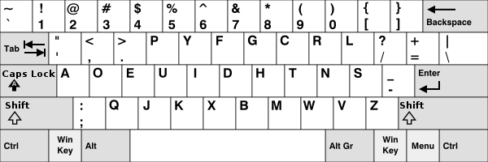
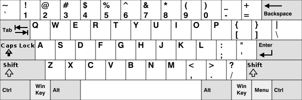

Well, technically who doesn't know about keyboard these days? Unless you're caught in a time capsule.
|  |  |
|---|---|
♥ DVORAK
|
♥ QWERTY
|
HOWEVER!Dvorak has failed to replace QWERTY as the most common keyboard
layout, with the most pointed-to reasons being that QWERTY was
popularized 60 years prior to Dvorak's creation.
|
|